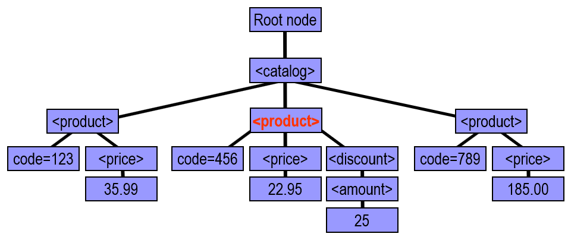
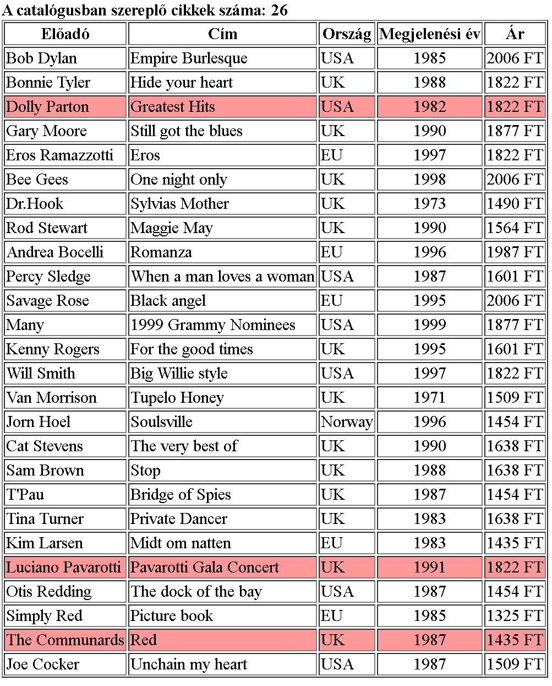
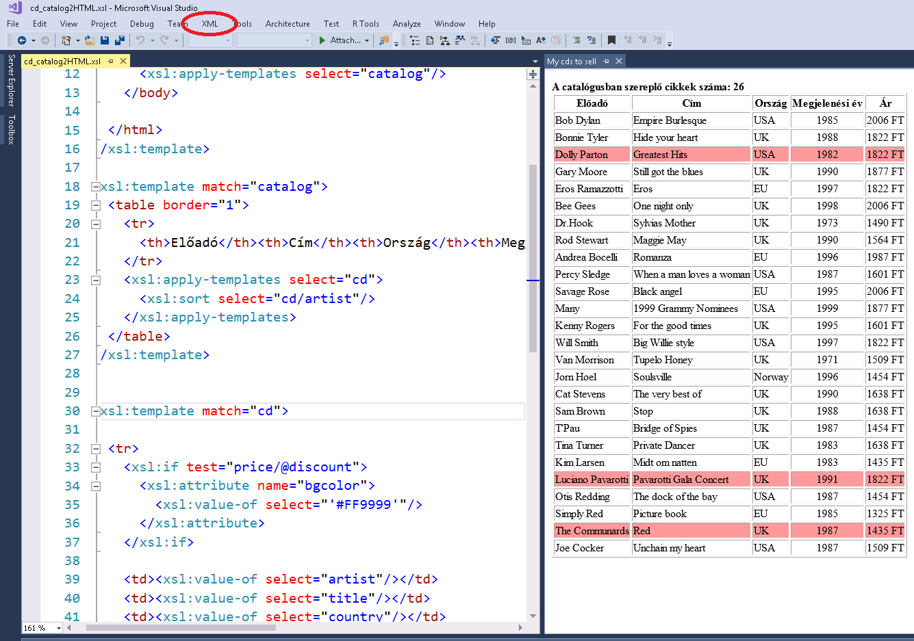

13. gyakorlat¶
XML technológiák (folytatás)¶
XML Path Language (XPath)¶
Az XPath egy olyan lekérdező nyelv, amivel az XML dokumentumban elemeket tudunk kijelölni, illetve az XML tartalma alapján számításokat lehet elvégezni (pl. egy adott elemnek hány gyereke van).
XML, mint fa¶
Egy XML dokumentumot tekinthetünk úgy is, mint egy fa. Csak egy gyökere lehet, és az elemek egymásba ágyazása jelenti a fában a szülő-gyerek kapcsolatot. Nézzük az alábbi catalog XML-t:
1 2 3 4 5 6 7 8 9 10 11 12 13 14 | |
A hozzá tartozó fa az alábbi (a piros kiemelésnek később lesz jelentősége). A fának a gyökere egy speciális ,,elem'', ami valójában nincs a gráfban (mint pl. Linux alatt a gyökér könyvtár). Ennek az elemnek a gyereke az XML gyökere, majd a több elem, de megjelennek az attribútumok és az elemek értékei. Emellett a megjegyzések, feldolgozási utasítások, névterek is részei a fának, de ezekkel most nem foglalkozunk, XPath szempontjából hasonlóak.

Elérési útvonalak, tengelyek, kiválasztás¶
Egy elérési útvonallal a fában egy vagy több elemet jelölhetünk ki. Az elérési útvonalat kétféleképpen adhatjuk meg:
- Abszolút útvonallal: mindig a gyökérhez viszonyítva adjuk meg. Ilyenkor
/jellel kezdődik, például aproductkijelölése:/catalog/product - Relatív útvonallal: amikor egy adott elemhez képest adjuk meg, például ha a
catalogelemhez képest akarjuk megadni aproduct-ot, akkor elég annyit írni, hogyproduct, de ha aprice-t akarjuk, akkor kijelölni, akkorproduct/price(hogy melyik, az majd később)
A tengelyek segítségével egy adott elemhez képest jelölhetünk ki elemeket. Néhány fontosabb tengely, és hogy mely elemeket jelölik ki a product elemhez képest (illetve a rövid jelölésük, ha van ilyen):
- self: önmaga, azaz magát az elemet jelöli ki
- a
productesetében ez aproductlesz self, vagy röviden csak.`
- a
- parent: az adott elem szülője
- a
productesetében a szülő acatalog parent, röviden csak..
- a
- child: az adott elem gyereke(i)
- a
productesetében több gyerek is van, apriceés adiscount childvagy röviden csak az adott típusú gyerek, azazchild::pricehelyett csakprice
- a
- attribute: az adott elem attribútuma(i)
- a
productesetében acode attribute::codehelyett elég csak annyit írni, hogy@code
- a
- descendant-or-self: az adott elem és a leszármazottai
- a
producttesetében aproductönmaga, és minden leszármazott elem (price,discount,amount) - például, ha a leszármazottak között a
price-ra vagyunk kíváncsiak, akkor a/descendant-or-self()/pricehivatkozást kell használni, vagy röviden a//pricejelölést
- a
- További tengelyek:
- ancestors, ancestor-or-self, descendant, following, following-sibling, namespace, preceding, preceding-sibling
Elemek kiválasztása¶
Útvonalak segítségével a fent leírt módon, azaz például az összes price elem kiválasztása a //price segítségével tehető meg. Azonban lehet egyéb lehet egyéb feltételeket is meg megfogalmazni, általánosan a a képlet axis::node-test[predicate] alakban írható fel, ahol a predicate a feltételeket jelenti. Ezekre néhány példa:
- Azon
productelemek kiválasztása, amelynek van kód attribútuma, és annak az értéke 123 a//product[@code="123"]kifejezéssel választható ki, azaz az attribútum értékére a a feltételt a[@attr="ertek"]mondja meg - Ha azokat szeretnénk kiválasztani, amelyeknek van
codeattribútuma, de az értéke mindegy, akkor a//product[@code]kifejezést kell használni, azaz attribútum létezésére a feltétel[@attr] - Ha az utolsó
productelemet akarjuk kijelölni, akkor aproduct[last()]segítségével tehetjük meg, de ha például a harmadikat, akkorproduct[3]a megoldás - De több feltételt is össze lehet fűzni, pl.
product[last()][@code]és ilyenkor balról jobbra lesznek kiértékelve
Az elérési útvonalak csomópont gyűjteményeket adnak vissza, amiket felhasználhatunk különböző módon:
- Össze lehet fűzni, azaz ha egy XML-ben
cdésdvdvegyesen szerepel, akkor az összescdvagydvdkijelölésecd | dvd, azaz a|jellel lehet összefűzni - Meg is számolhatom az összes olyan
productelemet, amelynek a kódja legalább 500:count(product[@code >= 500])- De lehetne azon
priceelemeket is kiválasztani, ahol apriceértéke legalább 100:/catalog/product[price >= 100]/price
- De lehetne azon
- Kiválaszthatom azokat az elemeket, amelyeknek a kódja 500 és 600 közé esik:
product[@code >500 and @code <600] - Szöveges alapú szűrések is lehetnek, például azon vásárlók kiválasztása, amelyeknek a neve "dr"-rel kezdődik:
customer[ starts-with(@name, "dr")]
A teljesség igénye nélkül csak néhány példát mutattunk arra, hogy milyen lehetőségek vannak csomópontok kijelölésére (további példák), és ezeket lehet kombinálni is, pl. azon price elemeket is kiválasztani, ahol a price értéke legalább 100: /catalog/product[price >= 100]/price
XSL (eXtensible Stylesheet Language) Transformations (XSLT)¶
Az XSL az az XML-hez tartozó style sheet, kb az, mint a CSS a HTML számára. Az XSLT egy nyelv, amivel az XML dokumentumokat transzformálni lehet:
-
XML-t XML-lé, ha például át akarjuk alakítani (például a lenti két XML ugyanazt az információ tartalmazza, csak más formátumban), vagy valamilyen műveletet (szűrés, számolás, összefűzés, stb.) is szeretnénk végezni az adatokon.
1 2 3 4 5 6 7
<employees> <employee> <name>Reid</name> <salary>91000</salary> </employee> ... </employees>1 2 3 4
<staff> <staff-member name="Reid" pay="91000"/> ... </staff>
-
XML-t HTML-lé vagy más dokumentummá akarunk alakítani.
1 2 3 4 5 6 7 8 9
<html> <table> <tr> <td>Reid</td> <td>91000</td> </tr> ... </table> </html>
XSLT szabályok¶
A következőkben bemutatjuk, hogyan lehet megadni egy XSLT transzformációt. Az egészet egy példán keresztük fogjuk bemutatni, amikor is a cél egy XML HTML-lé konvertálása lesz. A feladat a CD katalógus XML átalakítása HTML-lé a következő szempontok szerint:
- A HTML oldal címe a
catalogelemnameattribútumának az értéke legyen - írjuk ki, hogy hány CD van a katalógusban
- A CD-k egy táblázatban jelenjenek meg
- Az
artistszerint legyenek rendezve - Az akciós elemeknek piros legyen a háttere
- A CD árát Ft-ban adjuk meg
- Az
A CD katalógus egy részlete:
1 2 3 4 5 6 7 8 9 10 11 12 13 14 15 16 17 18 19 20 21 22 23 | |
Az XSLT is egy XML dokumentum, ahol az XSLT transzformációt leíró elemek/szabályok olyan elemek, amelyek az xsl névtérben vannak, de emellett lehetnek további elemek is, mint ahogy a példában is lesznek majd HTML elemek is.
1 2 3 | |
A transzformáció definiálása nem más, mint XSLT szabályok megadása, melyek tetszőleges sorrendben végrehajtódhatnak. Az, hogy mire illeszkedik a transzformálandó XML-ben, az XPath segítségével írható le. A szabályokat a <xsl:template match="valami"> segítésével adhatjuk meg, ahol a valami mondja meg, hogy mire illeszkedjen. Például ha a gyökér elemre akarunk definiálni egy szabályt, akkor az alábbi módon tehetjük meg:
1 2 3 4 5 6 7 8 9 10 11 12 13 14 15 16 17 | |
A fenti példában a gyökér elemre fog ,,végrehajtódni'' a szabály, aminek a belsejében egy HTML oldal kódja látható, és a végrehajtás itt azt jelenti majd, hogy azt a kódot "kiírja", azaz a transzformáció eredménye az a HTML oldal lesz.
Ha egy adott XML elem értékét akarjuk kiolvasni az XSLT segítségével, akkor ezt a <xsl:value-of select="elem"/> segítségével tehetjük meg. Ez kiolvassa az adott elem értékét, és ,,beírja'' az adott helyre, azaz ha az oldal címének a a katalógus gyökér elemének a name attribútumát akarom megadni, akkor a következő módon kell kiegészíteni a fenti példát:
1 2 3 | |
Nem szükséges abszolút útvonallal megadni a hivatkozást, mert a minta illesztésekor az adott elemen ,,állunk'', ezért ahhoz képest relatív útvonallal is megadhatjuk. (Ha nem az XML elem értékét, hanem magát az XML elemet akarnánk kiíratni, akkor a <xsl:copy-of select="elem"/> segítségével tehetjük meg, de ezt nem fogjuk használni a példában.)
A fenti megoldásban a gyökérre illeszkedő mintát definiáltunk, de definiálhatunk további mintákat is, és azokra hivatkozhatunk, így egy mintát többször is fel lehet használni, illetve a kód is átlátható marad. A további template-re való hivatkozást a <xsl:apply-templates select="elem"/> segítségével adhatjuk meg.
1 2 3 4 5 6 7 8 9 10 11 12 13 14 15 16 17 18 | |
A további feladat a CD-khez elkészíteni egy táblázatot, aminek a fejlécét statikusan beleírhatjuk a transzformációba. Ezután a CD-ez kell bejárni egy ,,for-ciklussal'' de úgy, hogy az artist szerint legyenek rendezve. Erre egy lehetséges megoldás, hogy definiálunk egy szabályt a cd-re is, és azt alkalmazzuk, de ettől még nem lesznek rendezve, ehhez meg kell adnunk, hogy az artist szerint rendezve alkalmazza a szabályt: <xsl:sort select="cd/artist"/>
1 2 3 4 5 6 7 8 9 10 11 12 13 14 | |
Minden egyes cd esetében egy új sort szúrunk be a táblázatba, ahol a sor piros hátteret kap, ha az adott cd akciós. Ehhez egy feltételt kell megvizsgálnunk, amit a mi esetünkben a <xsl:if test="price/@discount"> segítségével tehetjük meg, majd beállítjuk a bgcolor értékét, ha a feltétel igaz (azaz a price-nak van discount attribútuma).
1 2 3 4 5 6 7 8 | |
A többi érték beírása a táblázatba már ,,nem nehéz''. Annyit még megteszünk, hogy a dollárban megadott árat átkonvertáljuk forintra 320Ft/$ árfolyamon és az évszámot középre igazítjuk.
1 2 3 4 5 6 7 8 9 10 11 12 13 14 15 16 17 18 19 | |
A teljes megoldás egyben:
1 2 3 4 5 6 7 8 9 10 11 12 13 14 15 16 17 18 19 20 21 22 23 24 25 26 27 28 29 30 31 32 33 34 35 36 37 38 39 40 41 42 43 44 45 46 47 48 49 50 51 52 | |
Gyakorlati rész¶
Hogyan tudom ezt kipróbálni? Automatikus a transzformáció?
Böngésző¶
Ha az XML dokumentum elején meg van adva, hogy milyen transzformációt kell alkalmazni a megjelenítésnél, akkor ,,automatikusan végrehajtódik''.
1 2 3 | |
Azonban ez a gyakorlatban nem működik, mert a böngészők biztonsági okokból tiltják a lokális fájlok hozzáférést. Ha ezt kikapcsoljuk, akkor működik, hogy ,,betöltéskor'' (drag&drop a fájlt a böngészőre) a transzformált változat jelenik meg. Ahhoz, hogy ezt ki lehessen próbálni pl. Chrome alatt, a Chrome-ot a –allow-file-access-from-files paraméterrel kell elindítani.

Visual Studio¶
Lehetőség van a Visual Studioba is betölteni és végrehajtani a transzformációt. Ehhez nyissuk meg a transzformációs fájl VS-ben, és a a fájl van kiválasztva, akkor a menüsorban megjelenik egy XML menüpont is. Itt el tudjuk indítani a transzformációt debug-gal vagy anélkül. Ehhez ki kell választani a transzformálandó XML-t, majd lefut rá a transzformáció és az eredmény megjelenik a VS-ben. Lehetőség van break point-ok beszúrásába is, és akkor lépésről lépésre tudjuk követni a transzformációt, látjuk hol állunk a fában, ... Ekkor a már elkészül és értelmezhető kimenet már megjelenik.

Forrás: a fenti példa és további részletek a https://www.w3schools.com/xml/xsl_intro.asp oldalon érhetőek el.